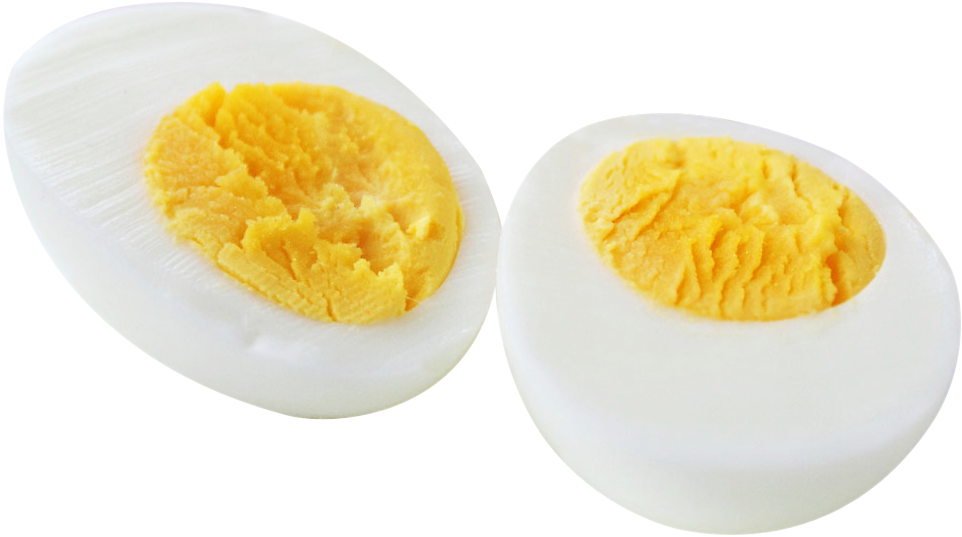
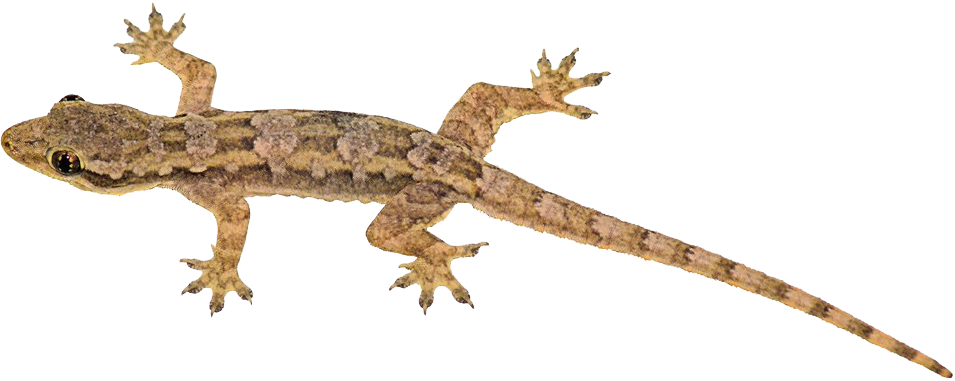
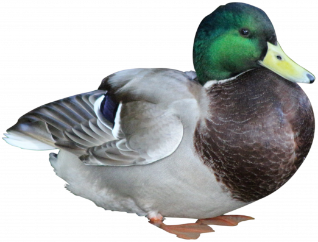
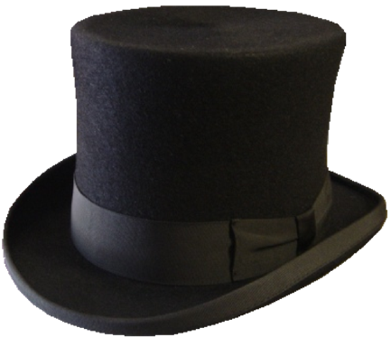

[14:50, 19/06/2022] i guess conversations are spontaneous, right?
[14:50, 19/06/2022] conversations are really cool collaborations, yes they are
[14:51, 19/06/2022] i mean you don’t know, if you say hello to someone. they may say hello back or not or just put a boiled egg  in their mouth and walk away
[14:51, 19/06/2022] or something else
[14:51, 19/06/2022] you have no idea
[14:51, 19/06/2022] no anything could happen
[14:51, 19/06/2022] yes
[14:51, 19/06/2022] they could rip out of their skin suit and show you their true  lizard form because hello was the magic word that makes their skin suit come off
[14:52, 19/06/2022] it might just be or they might have a duck  in their backpack, which they will take out and it will say hello back to you
[14:53, 19/06/2022] oh that would be very surprising maybe that should be the expectation every time
[14:53, 19/06/2022] it would
[14:53, 19/06/2022] i sure hope that would happen some day
[14:53, 19/06/2022] yes that would be wonderful. you could then give the duck a flower and it could put it on its hat 
[14:54, 19/06/2022] the hat which it has. i like that.
[14:54, 19/06/2022] oh sure it does, I think it wouldn’t like to got out without
[14:55, 19/06/2022] absolutely not, that’d be preposterous
[14:29, 09/04/2022] going to the supermarket is an unplanned performance
[14:29, 09/04/2022] no plan, just do
[14:29, 09/04/2022] most actions maybe maybe not maybe that’s a bit silly to say but in a way
[14:29, 09/04/2022] somehow
[14:30, 09/04/2022] without a shopping list of course
[14:30, 09/04/2022] but also you go to the supermarket with the intention of buying something usually
[14:30, 09/04/2022] yes that’s true an action without any previous intention at all is something to think about
[14:30, 09/04/2022] yes
[14:31, 09/04/2022] i don’t know what it looks like
[14:32, 09/04/2022] also I am thinking about the influence the place you work in has
[14:33, 09/04/2022] but maybe to perform without intention you can’t see or hear right? or feel, with large mittens
[14:33, 09/04/2022] also interesting
[14:33, 09/04/2022] yes so it’s just in the moment
[16:31, 01/04/2022] the pigeons were not the birds I wanted to feed there but here they are [16:31, 01/04/2022] oh that’s how pigeons work yes they truly come when no one calls [16:31, 01/04/2022] they sure do and when they are there once they will always come back